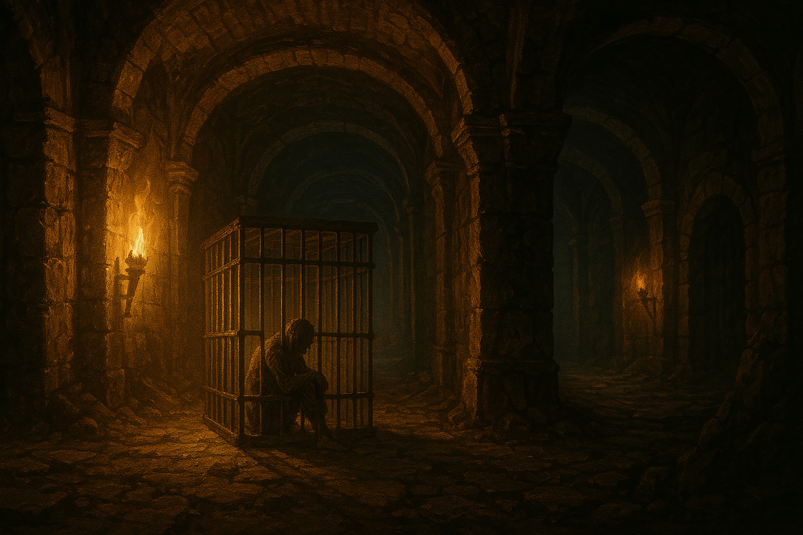

Chapter 1: Altered Mindset
Beneath the Temple

Beneath the Temple
15048.07.23
踏出漆黑的木製電梯，恢復體力的 Samael 發現了地上一只小型木盒子，下面留了一張紙條，寫著「生日快樂」。那是一只被稱為「洛林的音樂盒」的小盒子，裡面放送著妖精們的民謠「征服者的後裔」。
冒險者們與 Midori 對峙，質疑他在禱告儀式時離奇的失蹤。Midori 發自內心的懺悔與道歉讓其他冒險者們暫時擱下了心中的疑惑，一起繼續前進。
Jiaheng、Uko 與 Usioni 突然被一個聲音喊住，三人發現了這聲音來自自己過去死而復甦的背後主使，Domneil，自稱是詐欺之神 Ultisen 的兒子。Domneil 要他們分別在冒險團內完成一個天大的玩笑來取悅他，他會判定誰的玩笑最棒，以成為他在世間的代理人，並承諾這個身份只會帶給他們好處而已。
在地下城的牆壁上，冒險者們看見了不少看不懂語言雕刻的文字，不過依照他們過去所見，認為應該是拉索斯語。
在一處門口前，冒險者們遇見了一個巨大的食人魔，臉上帶了一個黑色面具。在對談後，他們認識了這個自稱 Guu-Guu，愛吃糖糖，眼睛看不見的單純食人魔，並小小戲弄了他一番。冒險者們繞過了 Guu-Guu，卻誤觸了機關，幾名冒險者受到了來自門邊機關所射出的箭的傷。
跨過門後，冒險者們肚子餓，坐了下來吃東西，也問了 Guu-Guu 要不要吃東西，並邀請 Guu-Guu 一起踏上冒險。Guu-Guu 聽聞可以吃到更多糖糖便欣然答應。
哼著獸人的歌謠，Guu-Guu 領著冒險者們走到了一處死巷，卻因為看不見而撞到了頭，倒在地上大哭。冒險者們發現左方、右方，以及前方都各有一扇門，分別有不同的標誌發著光。左方的門是一個 🤚，前方的門是一個 🙏，而右方的門則是一個 👇。左方的門可以推得動，但是挺重的，前方的門則較容易推開。冒險者們慫恿 Guu-Guu 進到前方的門探索，但是 Guu-Guu 因為體型太大進不去而很失望。Usioni 第一個踏入，發現裡面一片漆黑。其他冒險者們分別進入，並告訴 Guu-Guu 在外面等他們並幫他們把風。
當所有人踏入前方的門後，除了 Paladin 外的所有人都陷入了幻象之中，面對過去自己的創傷與重要的人，也分別受到了來自他們的傷害。經過一段時間後，所有人都清醒了過來，但是有幾位冒險者明顯感覺到有除了自己以外的人的存在。在經過 Uko 變身成冰原狼後的嗅聞後，他斷定 Midori 有問題，眾人也在向 Midori 詢問下發現他的確有所破綻，並與他發生戰鬥，最終擊昏他並將他綑綁。
同時，Midori 發現自己漂浮在一個全黑的異樣空間，四周什麼都沒有。經過一段時間的觀察，Midori 發現有三雙來自不同方向的眼睛正在觀察著他。試圖與這些人對話，Midori 發現這些人應該是拉索斯的信徒，想與他談判，讓他在冒險團中擔任間諜。Midori 不想順從，也因為時間很多，拿出了口袋中從 Tai Tai 我還要那裡拿到的項鍊玩弄，一段時間後與 Domneil 建立起了溝通。Domneil 提議，要 Midori 放棄自己的信仰，改信他的父親，詐欺之神 Ultisen。不過 Midori 沒有就範，但是因為 Domneil 臨時起意的惡作劇，嚇到了在外觀察的三位拉索斯信徒。後來拉索斯信徒失去了耐心，直接將 Midori 遣回自己的身體，但是附在他身體內的另一個靈魂依然沒有離開，而 Midori 的個性被強行改為了 Evil。
在 Midori 回神之前，冒險者們從前門的房間藉由擊破了一個隱藏的門，走到了另一個房間，並發現了桌上放有四個神奇的物品。YHWH 拿走了 Bag of Holding，而 Uko 則拿走了 Goggles of Night、Luckstone，以及 Mysterious Stone。冒險者們也為了防範 Midori 做出意料之外的行為而將她綑綁後塞住嘴巴。
冒險者們再度探索了這個房間，發現兩端各有一扇門。YHWH 在開其中一道門的過程中傷了他的手。簡單探索了門後的空間後，冒險者們決定待在原本的房間先作休息再繼續冒險。
守夜的過程中，幾位冒險者像是受到蠱惑般，一直想將手伸進當初傷了 YHWH 手的門。在大家清醒後，一同進入了新的房間。
新房間內像是迷宮一般，Uko 帶頭，找到了通回 Guu-Guu 所在的大廳的門，以及另一個門，上面站了一隻石像鬼，兩顆眼睛鑲嵌著鑽石閃閃發光。在冒險者伸手想去拿取鑽石的同時，石像鬼動了起來，向他們攻擊。一邊對抗石像鬼，冒險者們也試圖突破木門，最終終於打破了門也擊敗了石像鬼。YHWH 用 Bag of Holdings 裝了石像鬼碎裂的石塊，而 Samael 也將兩顆鑽石收起。
木門內是向下的樓梯。冒險者們走下了樓梯，進入了一到長廊。越走越遠，光線也越來越亮，同時，也從遠處傳來有人叫喊「救命」的聲響。不久後，冒險者們看見一個巨大的籠子，裡面有個瘦弱的人被困在裡面……